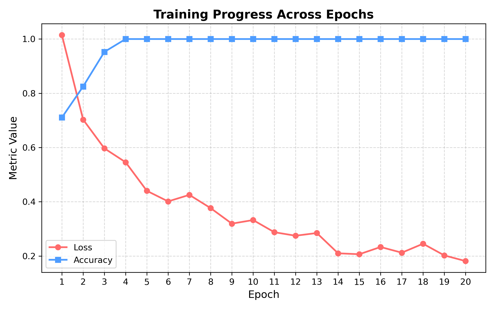
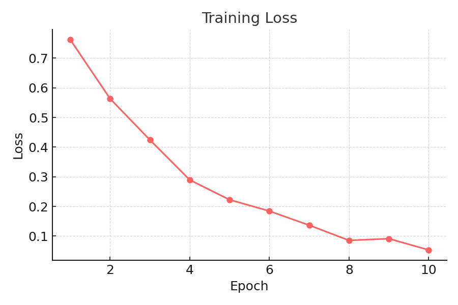
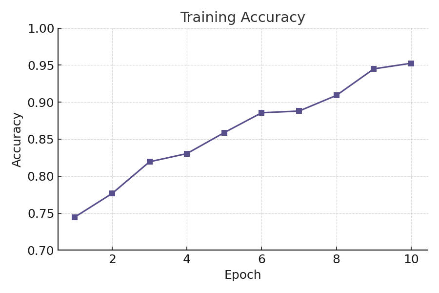
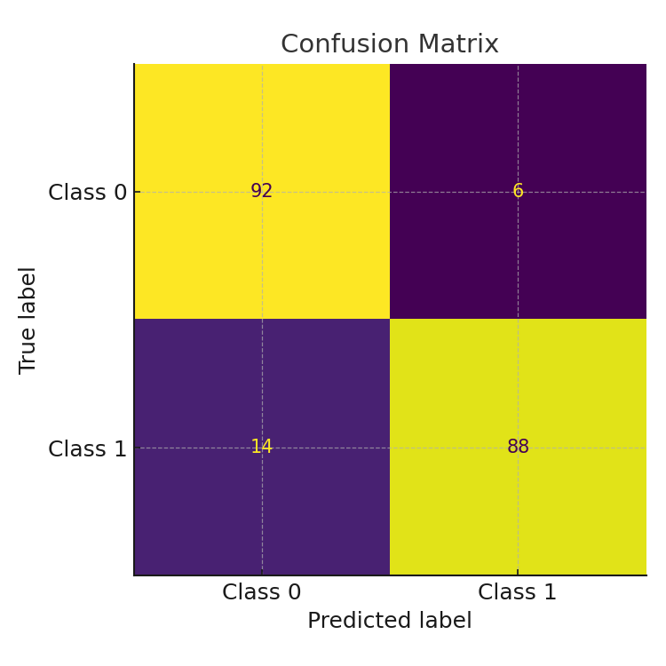

📋 Run Configuration
Model ID : CELLFLOW_2025
Crop Size : 48
Epochs : 12
Pixel Res : 0.65 µm/pixel
Backbone : UNet
Mask File : ./data/toy_mask.tif
Config File : ./config/run_config.yaml
📈 Training Metrics



🖼️ Sample Predictions


📊 Confusion Matrix
🧠 Classifier Performance
Accuracy : 91.3%
Precision : 92.0%
Recall : 90.5%
F1 Score : 91.2%
AUC : 0.94